Summary
This experiment investigates audit log pipeline. Fractional factorial of 5 audit log pipeline parameters for ingest rate and latency.
The design varies 5 factors: batch size (events), ranging from 100 to 10000, flush interval ms (ms), ranging from 100 to 5000, compression level (level), ranging from 1 to 9, buffer pool mb (MB), ranging from 32 to 512, and writer threads (threads), ranging from 1 to 8. The goal is to optimize 2 responses: ingest rate eps (events/s) (maximize) and end to end latency ms (ms) (minimize). Fixed conditions held constant across all runs include storage = s3, format = json_lines.
A fractional factorial design reduces the number of runs from 32 to 8 by deliberately confounding higher-order interactions. This is ideal for screening — identifying which of the 5 factors matter most before investing in a full study.
Key Findings
For ingest rate eps, the most influential factors were flush interval ms (42.7%), buffer pool mb (33.7%), writer threads (20.8%). The best observed value was 78631.0 (at batch size = 100, flush interval ms = 5000, compression level = 1).
For end to end latency ms, the most influential factors were flush interval ms (52.0%), batch size (31.7%), buffer pool mb (11.8%). The best observed value was 89.0 (at batch size = 10000, flush interval ms = 100, compression level = 9).
Recommended Next Steps
- Follow up with a response surface design (CCD or Box-Behnken) on the top 3–4 factors to model curvature and find the true optimum.
- Consider whether any fixed factors should be varied in a future study.
- The screening results can guide factor reduction — drop factors contributing less than 5% and re-run with a smaller, more focused design.
Experimental Setup
Factors
| Factor | Low | High | Unit |
|---|
batch_size | 100 | 10000 | events |
flush_interval_ms | 100 | 5000 | ms |
compression_level | 1 | 9 | level |
buffer_pool_mb | 32 | 512 | MB |
writer_threads | 1 | 8 | threads |
Fixed: storage = s3, format = json_lines
Responses
| Response | Direction | Unit |
|---|
ingest_rate_eps | ↑ maximize | events/s |
end_to_end_latency_ms | ↓ minimize | ms |
Configuration
{
"metadata": {
"name": "Audit Log Pipeline",
"description": "Fractional factorial of 5 audit log pipeline parameters for ingest rate and latency"
},
"factors": [
{
"name": "batch_size",
"levels": [
"100",
"10000"
],
"type": "continuous",
"unit": "events"
},
{
"name": "flush_interval_ms",
"levels": [
"100",
"5000"
],
"type": "continuous",
"unit": "ms"
},
{
"name": "compression_level",
"levels": [
"1",
"9"
],
"type": "continuous",
"unit": "level"
},
{
"name": "buffer_pool_mb",
"levels": [
"32",
"512"
],
"type": "continuous",
"unit": "MB"
},
{
"name": "writer_threads",
"levels": [
"1",
"8"
],
"type": "continuous",
"unit": "threads"
}
],
"fixed_factors": {
"storage": "s3",
"format": "json_lines"
},
"responses": [
{
"name": "ingest_rate_eps",
"optimize": "maximize",
"unit": "events/s"
},
{
"name": "end_to_end_latency_ms",
"optimize": "minimize",
"unit": "ms"
}
],
"settings": {
"operation": "fractional_factorial",
"test_script": "use_cases/65_audit_log_pipeline/sim.sh"
}
}
Experimental Matrix
The Fractional Factorial Design produces 8 runs. Each row is one experiment with specific factor settings.
| Run | batch_size | flush_interval_ms | compression_level | buffer_pool_mb | writer_threads |
|---|
| 1 | 100 | 5000 | 9 | 32 | 1 |
| 2 | 10000 | 100 | 1 | 32 | 1 |
| 3 | 10000 | 5000 | 1 | 512 | 1 |
| 4 | 10000 | 5000 | 9 | 512 | 8 |
| 5 | 100 | 5000 | 1 | 32 | 8 |
| 6 | 10000 | 100 | 9 | 32 | 8 |
| 7 | 100 | 100 | 1 | 512 | 8 |
| 8 | 100 | 100 | 9 | 512 | 1 |
Step-by-Step Workflow
1
Preview the design
$ doe info --config use_cases/65_audit_log_pipeline/config.json
2
Generate the runner script
$ doe generate --config use_cases/65_audit_log_pipeline/config.json \
--output use_cases/65_audit_log_pipeline/results/run.sh --seed 42
3
Execute the experiments
$ bash use_cases/65_audit_log_pipeline/results/run.sh
4
Analyze results
$ doe analyze --config use_cases/65_audit_log_pipeline/config.json
5
Get optimization recommendations
$ doe optimize --config use_cases/65_audit_log_pipeline/config.json
6
Multi-objective optimization
With 2 competing responses, use --multi to find the best compromise via Derringer–Suich desirability.
$ doe optimize --config use_cases/65_audit_log_pipeline/config.json --multi
7
Generate the HTML report
$ doe report --config use_cases/65_audit_log_pipeline/config.json \
--output use_cases/65_audit_log_pipeline/results/report.html
Features Exercised
| Feature | Value |
|---|
| Design type | fractional_factorial |
| Factor types | continuous (all 5) |
| Arg style | double-dash |
| Responses | 2 (ingest_rate_eps ↑, end_to_end_latency_ms ↓) |
| Total runs | 8 |
Analysis Results
Generated from actual experiment runs using the DOE Helper Tool.
Response: ingest_rate_eps
Top factors: flush_interval_ms (42.7%), buffer_pool_mb (33.7%), writer_threads (20.8%).
ANOVA
| Source | DF | SS | MS | F | p-value |
|---|
| Source | DF | SS | MS | F | p-value |
| batch_size | 1 | 4704778.1250 | 4704778.1250 | 0.667 | 0.4513 |
| flush_interval_ms | 1 | 1942981953.1250 | 1942981953.1250 | 275.320 | 0.0000 |
| compression_level | 1 | 567645.1250 | 567645.1250 | 0.080 | 0.7881 |
| buffer_pool_mb | 1 | 1206755628.1250 | 1206755628.1250 | 170.997 | 0.0000 |
| writer_threads | 1 | 459363205.1250 | 459363205.1250 | 65.092 | 0.0005 |
| batch_size*flush_interval_ms | 1 | 1206755628.1250 | 1206755628.1250 | 170.997 | 0.0000 |
| batch_size*compression_level | 1 | 459363205.1250 | 459363205.1250 | 65.092 | 0.0005 |
| batch_size*buffer_pool_mb | 1 | 1942981953.1250 | 1942981953.1250 | 275.320 | 0.0000 |
| batch_size*writer_threads | 1 | 567645.1250 | 567645.1250 | 0.080 | 0.7881 |
| flush_interval_ms*compression_level | 1 | 2381653.1250 | 2381653.1250 | 0.337 | 0.5865 |
| flush_interval_ms*buffer_pool_mb | 1 | 4704778.1250 | 4704778.1250 | 0.667 | 0.4513 |
| flush_interval_ms*writer_threads | 1 | 26082253.1250 | 26082253.1250 | 3.696 | 0.1126 |
| compression_level*buffer_pool_mb | 1 | 26082253.1250 | 26082253.1250 | 3.696 | 0.1126 |
| compression_level*writer_threads | 1 | 4704778.1250 | 4704778.1250 | 0.667 | 0.4513 |
| buffer_pool_mb*writer_threads | 1 | 2381653.1250 | 2381653.1250 | 0.337 | 0.5865 |
| Error | (Lenth | PSE) | 5 | 35285835.9375 | 7057167.1875 |
| Total | 7 | 3642837115.8750 | 520405302.2679 | | |
Pareto Chart

Main Effects Plot

Normal Probability Plot of Effects
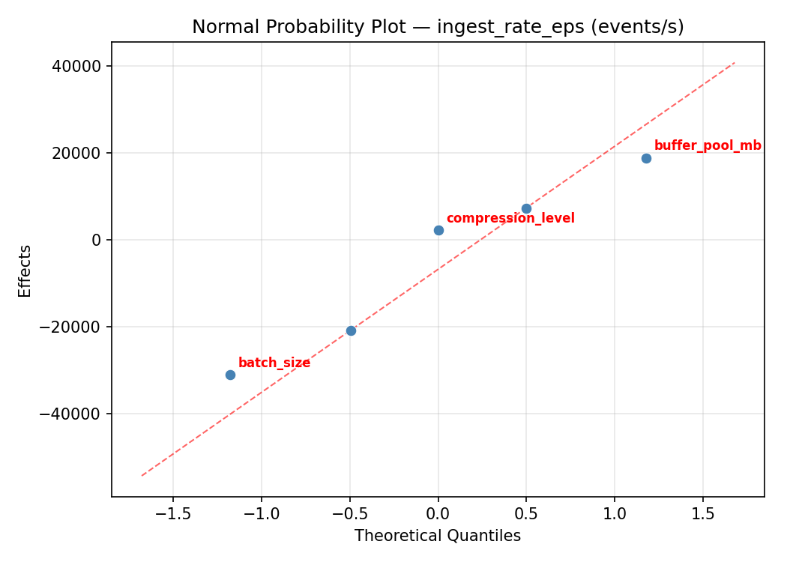
Half-Normal Plot of Effects
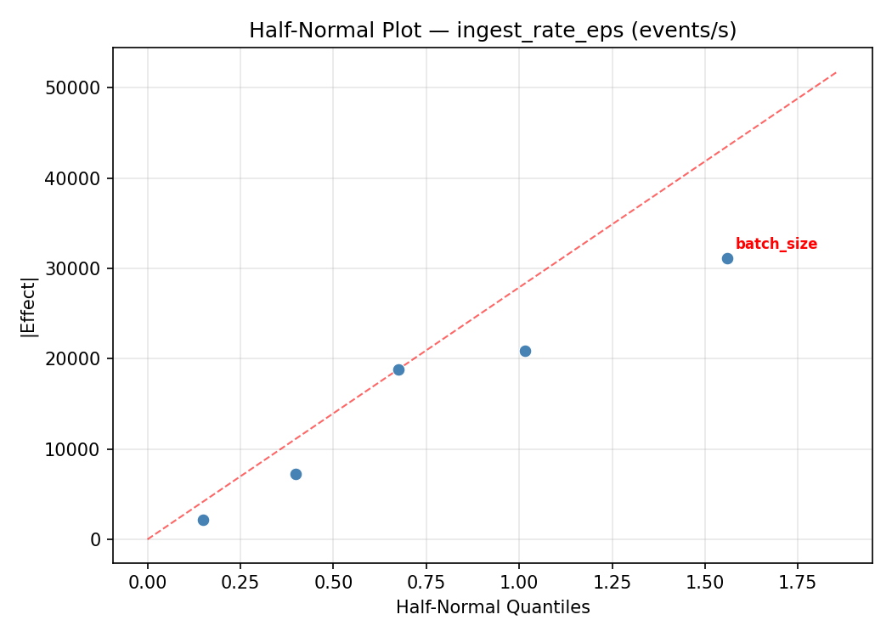
Model Diagnostics
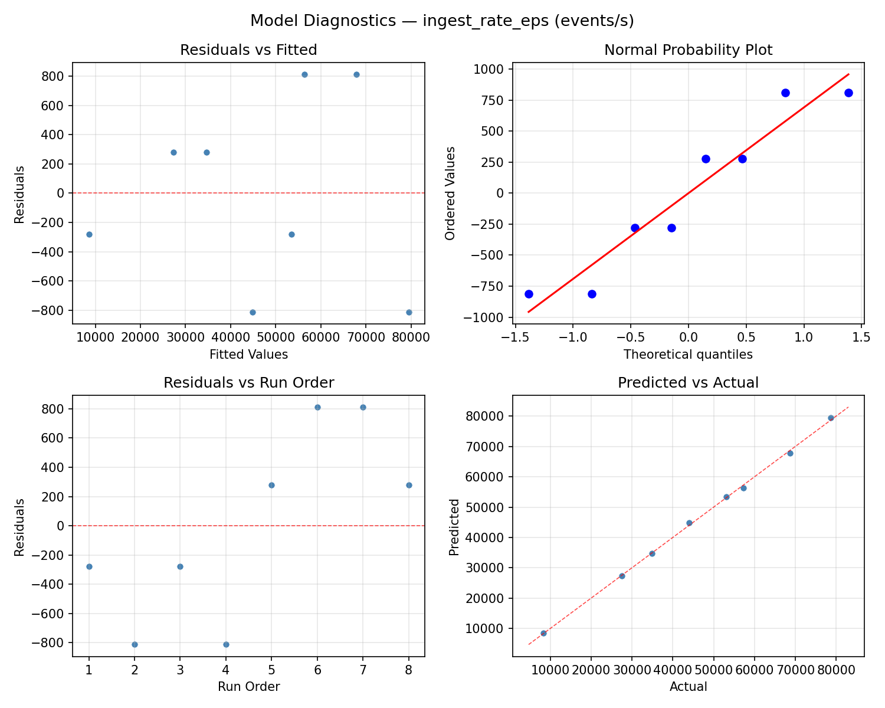
Response: end_to_end_latency_ms
Top factors: flush_interval_ms (52.0%), batch_size (31.7%), buffer_pool_mb (11.8%).
ANOVA
| Source | DF | SS | MS | F | p-value |
|---|
| Source | DF | SS | MS | F | p-value |
| batch_size | 1 | 17298.0000 | 17298.0000 | 15.164 | 0.0115 |
| flush_interval_ms | 1 | 46512.5000 | 46512.5000 | 40.774 | 0.0014 |
| compression_level | 1 | 32.0000 | 32.0000 | 0.028 | 0.8736 |
| buffer_pool_mb | 1 | 2380.5000 | 2380.5000 | 2.087 | 0.2082 |
| writer_threads | 1 | 162.0000 | 162.0000 | 0.142 | 0.7218 |
| batch_size*flush_interval_ms | 1 | 2380.5000 | 2380.5000 | 2.087 | 0.2082 |
| batch_size*compression_level | 1 | 162.0000 | 162.0000 | 0.142 | 0.7218 |
| batch_size*buffer_pool_mb | 1 | 46512.5000 | 46512.5000 | 40.774 | 0.0014 |
| batch_size*writer_threads | 1 | 32.0000 | 32.0000 | 0.028 | 0.8736 |
| flush_interval_ms*compression_level | 1 | 7812.5000 | 7812.5000 | 6.849 | 0.0473 |
| flush_interval_ms*buffer_pool_mb | 1 | 17298.0000 | 17298.0000 | 15.164 | 0.0115 |
| flush_interval_ms*writer_threads | 1 | 760.5000 | 760.5000 | 0.667 | 0.4513 |
| compression_level*buffer_pool_mb | 1 | 760.5000 | 760.5000 | 0.667 | 0.4513 |
| compression_level*writer_threads | 1 | 17298.0000 | 17298.0000 | 15.164 | 0.0115 |
| buffer_pool_mb*writer_threads | 1 | 7812.5000 | 7812.5000 | 6.849 | 0.0473 |
| Error | (Lenth | PSE) | 5 | 5703.7500 | 1140.7500 |
| Total | 7 | 74958.0000 | 10708.2857 | | |
Pareto Chart
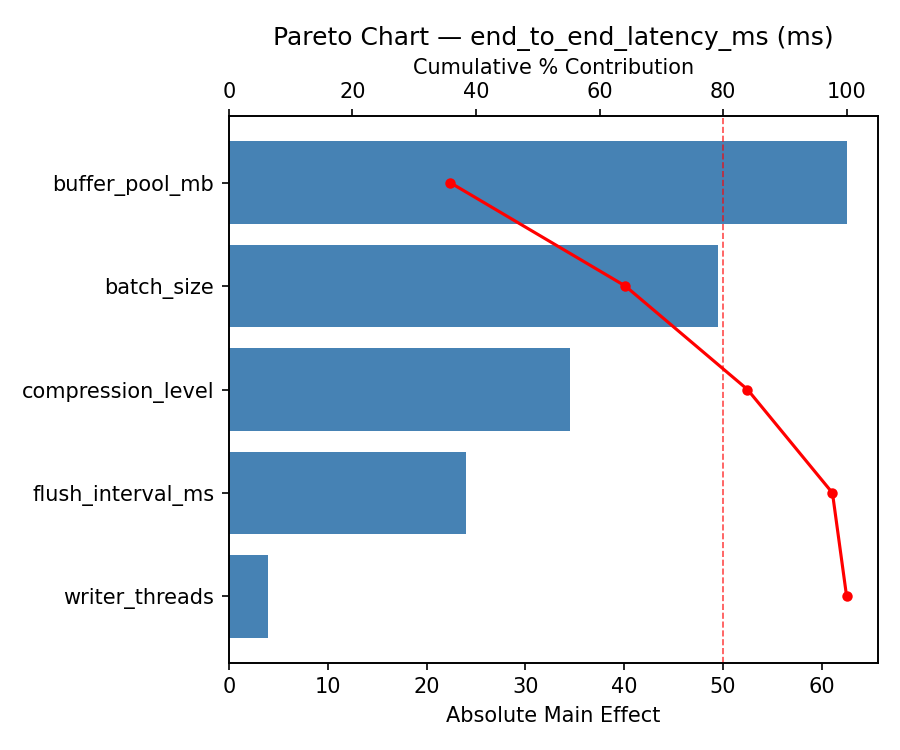
Main Effects Plot
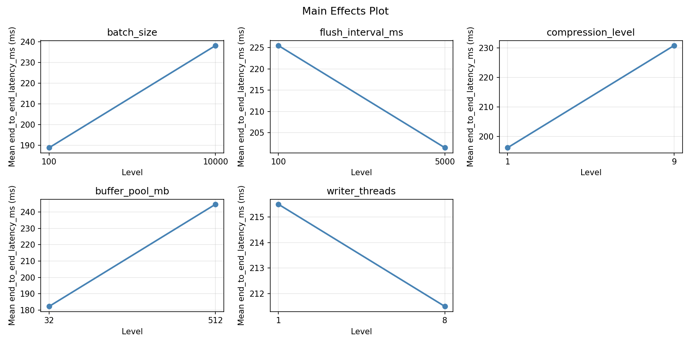
Normal Probability Plot of Effects
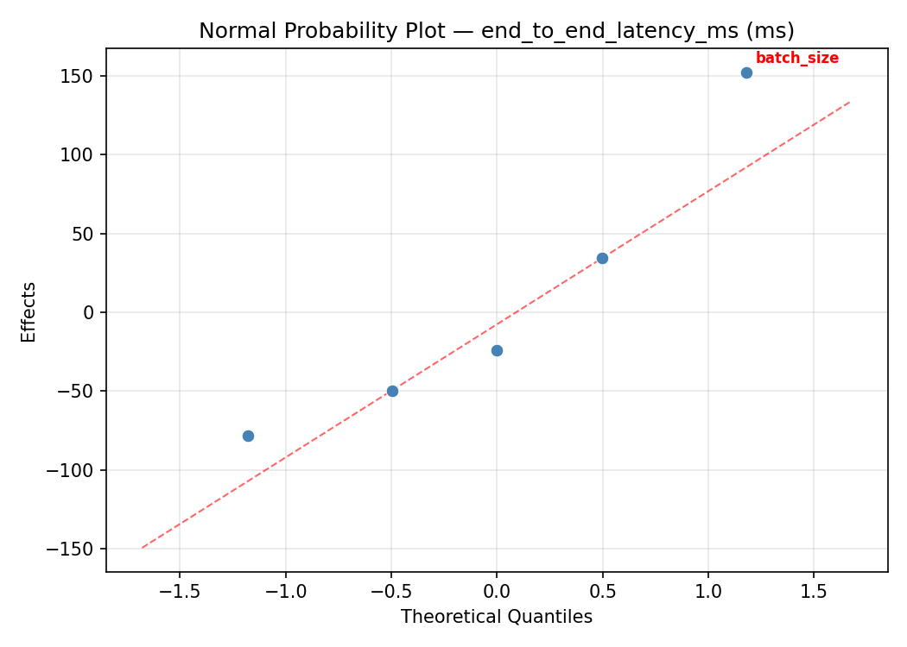
Half-Normal Plot of Effects
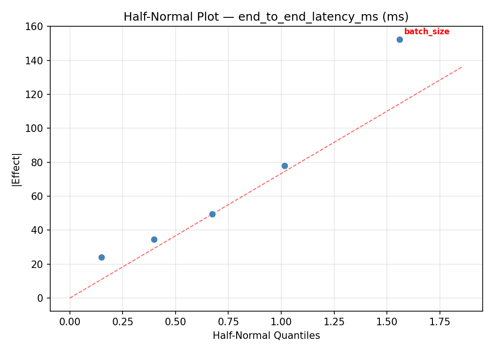
Model Diagnostics
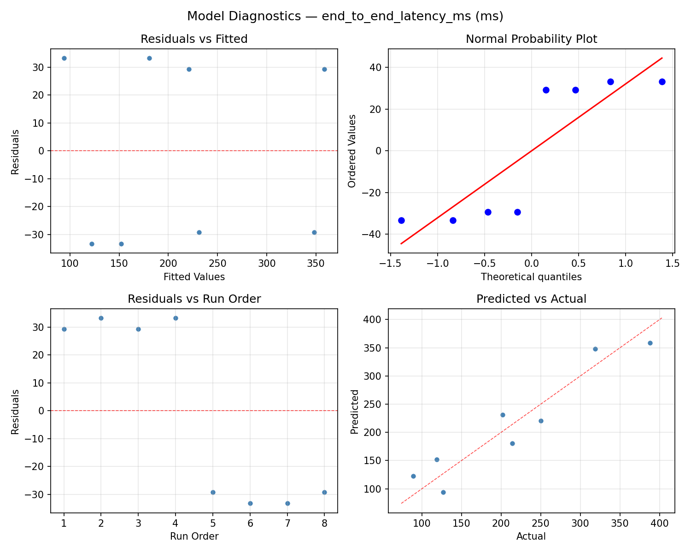
Response Surface Plots
3D surfaces fitted with quadratic RSM. Red dots are observed data points.
end to end latency ms batch size vs buffer pool mb

end to end latency ms batch size vs compression level

end to end latency ms batch size vs flush interval ms
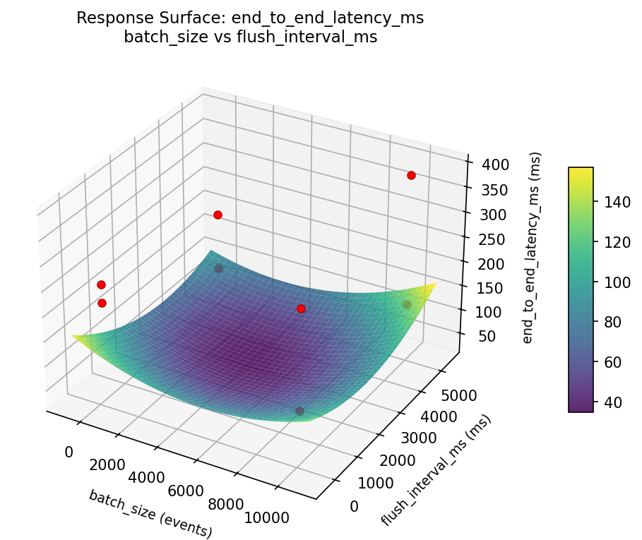
end to end latency ms batch size vs writer threads

end to end latency ms buffer pool mb vs writer threads

end to end latency ms compression level vs buffer pool mb

end to end latency ms compression level vs writer threads

end to end latency ms flush interval ms vs buffer pool mb
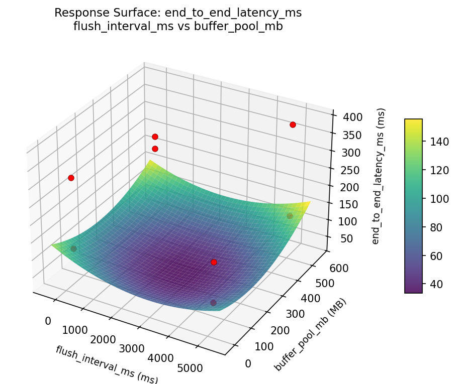
end to end latency ms flush interval ms vs compression level

end to end latency ms flush interval ms vs writer threads
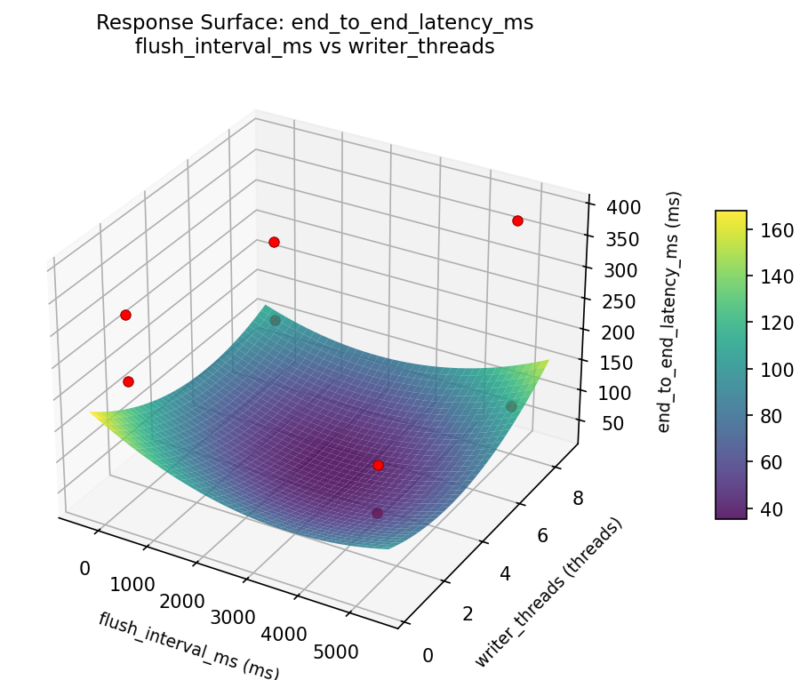
ingest rate eps batch size vs buffer pool mb

ingest rate eps batch size vs compression level
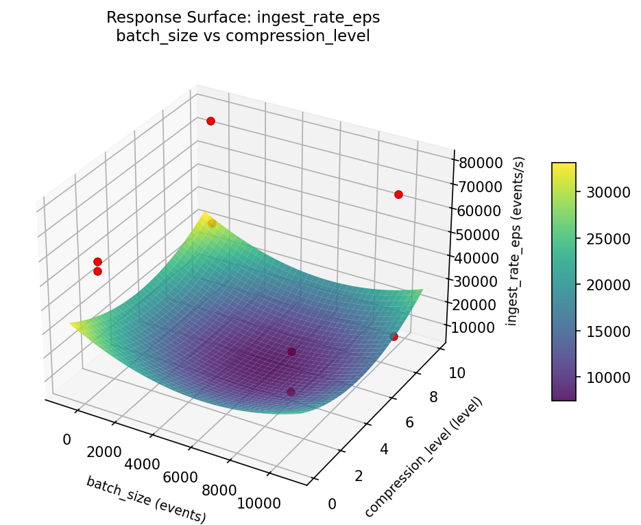
ingest rate eps batch size vs flush interval ms

ingest rate eps batch size vs writer threads

ingest rate eps buffer pool mb vs writer threads

ingest rate eps compression level vs buffer pool mb
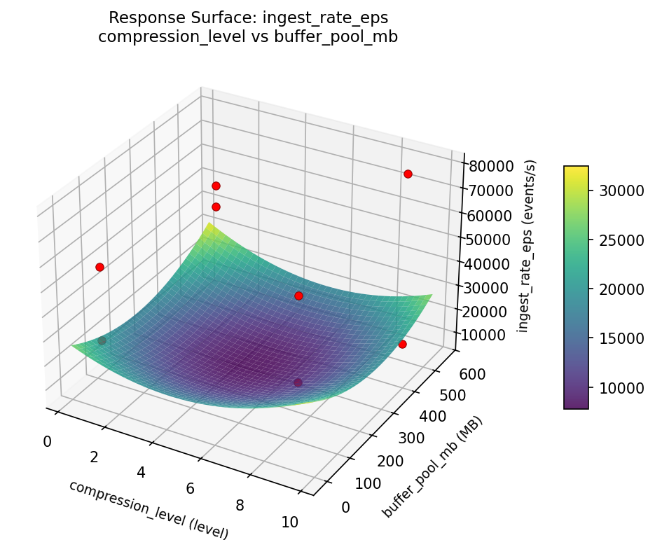
ingest rate eps compression level vs writer threads

ingest rate eps flush interval ms vs buffer pool mb
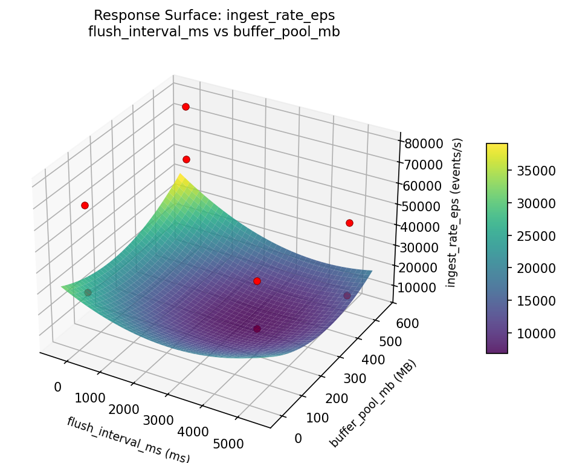
ingest rate eps flush interval ms vs compression level

ingest rate eps flush interval ms vs writer threads

Multi-Objective Optimization
When responses compete, Derringer–Suich desirability finds the best compromise.
Each response is scaled to a 0–1 desirability, then combined via a weighted geometric mean.
Overall Desirability
D = 0.9111
Per-Response Desirability
| Response | Weight | Desirability | Predicted | Dir |
|---|
ingest_rate_eps |
1.5 |
|
75863.38 0.9188 75863.38 events/s |
↑ |
end_to_end_latency_ms |
1.0 |
|
107.01 0.8998 107.01 ms |
↓ |
Recommended Settings
| Factor | Value |
|---|
batch_size | 9748 events |
flush_interval_ms | 128.8 ms |
compression_level | 1.074 level |
buffer_pool_mb | 451.2 MB |
writer_threads | 2.63 threads |
Source: from RSM model prediction
Trade-off Summary
Sacrifice = how much worse than single-objective best.
| Response | Predicted | Best Observed | Sacrifice |
|---|
end_to_end_latency_ms | 107.01 | 89.00 | +18.01 |
Top 3 Runs by Desirability
| Run | D | Factor Settings |
|---|
| #4 | 0.7791 | batch_size=100, flush_interval_ms=100, compression_level=1, buffer_pool_mb=512, writer_threads=8 |
| #7 | 0.7774 | batch_size=10000, flush_interval_ms=5000, compression_level=1, buffer_pool_mb=512, writer_threads=1 |
Model Quality
| Response | R² | Type |
|---|
end_to_end_latency_ms | 0.6395 | linear |
Full Multi-Objective Output
============================================================
MULTI-OBJECTIVE OPTIMIZATION
Method: Derringer-Suich Desirability Function
============================================================
Overall desirability: D = 0.9111
Response Weight Desirability Predicted Direction
---------------------------------------------------------------------
ingest_rate_eps 1.5 0.9188 75863.38 events/s ↑
end_to_end_latency_ms 1.0 0.8998 107.01 ms ↓
Recommended settings:
batch_size = 9748 events
flush_interval_ms = 128.8 ms
compression_level = 1.074 level
buffer_pool_mb = 451.2 MB
writer_threads = 2.63 threads
(from RSM model prediction)
Trade-off summary:
ingest_rate_eps: 75863.38 (best observed: 78631.00, sacrifice: +2767.62)
end_to_end_latency_ms: 107.01 (best observed: 89.00, sacrifice: +18.01)
Model quality:
ingest_rate_eps: R² = 0.5568 (linear)
end_to_end_latency_ms: R² = 0.6395 (linear)
Top 3 observed runs by overall desirability:
1. Run #6 (D=0.8410): batch_size=10000, flush_interval_ms=100, compression_level=1, buffer_pool_mb=32, writer_threads=1
2. Run #4 (D=0.7791): batch_size=100, flush_interval_ms=100, compression_level=1, buffer_pool_mb=512, writer_threads=8
3. Run #7 (D=0.7774): batch_size=10000, flush_interval_ms=5000, compression_level=1, buffer_pool_mb=512, writer_threads=1
Full Analysis Output
=== Main Effects: ingest_rate_eps ===
Factor Effect Std Error % Contribution
--------------------------------------------------------------
flush_interval_ms 31168.7500 8065.3991 42.7%
buffer_pool_mb 24563.7500 8065.3991 33.7%
writer_threads -15155.2500 8065.3991 20.8%
batch_size -1533.7500 8065.3991 2.1%
compression_level 532.7500 8065.3991 0.7%
=== ANOVA Table: ingest_rate_eps ===
Source DF SS MS F p-value
-----------------------------------------------------------------------------
batch_size 1 4704778.1250 4704778.1250 0.667 0.4513
flush_interval_ms 1 1942981953.1250 1942981953.1250 275.320 0.0000
compression_level 1 567645.1250 567645.1250 0.080 0.7881
buffer_pool_mb 1 1206755628.1250 1206755628.1250 170.997 0.0000
writer_threads 1 459363205.1250 459363205.1250 65.092 0.0005
batch_size*flush_interval_ms 1 1206755628.1250 1206755628.1250 170.997 0.0000
batch_size*compression_level 1 459363205.1250 459363205.1250 65.092 0.0005
batch_size*buffer_pool_mb 1 1942981953.1250 1942981953.1250 275.320 0.0000
batch_size*writer_threads 1 567645.1250 567645.1250 0.080 0.7881
flush_interval_ms*compression_level 1 2381653.1250 2381653.1250 0.337 0.5865
flush_interval_ms*buffer_pool_mb 1 4704778.1250 4704778.1250 0.667 0.4513
flush_interval_ms*writer_threads 1 26082253.1250 26082253.1250 3.696 0.1126
compression_level*buffer_pool_mb 1 26082253.1250 26082253.1250 3.696 0.1126
compression_level*writer_threads 1 4704778.1250 4704778.1250 0.667 0.4513
buffer_pool_mb*writer_threads 1 2381653.1250 2381653.1250 0.337 0.5865
Error (Lenth PSE) 5 35285835.9375 7057167.1875
Total 7 3642837115.8750 520405302.2679
Note: Error estimated using Lenth's pseudo-standard-error (unreplicated design)
=== Interaction Effects: ingest_rate_eps ===
Factor A Factor B Interaction % Contribution
------------------------------------------------------------------------
batch_size buffer_pool_mb 31168.7500 37.2%
batch_size flush_interval_ms 24563.7500 29.3%
batch_size compression_level -15155.2500 18.1%
flush_interval_ms writer_threads 3611.2500 4.3%
compression_level buffer_pool_mb 3611.2500 4.3%
flush_interval_ms buffer_pool_mb -1533.7500 1.8%
compression_level writer_threads -1533.7500 1.8%
flush_interval_ms compression_level 1091.2500 1.3%
buffer_pool_mb writer_threads 1091.2500 1.3%
batch_size writer_threads 532.7500 0.6%
=== Summary Statistics: ingest_rate_eps ===
batch_size:
Level N Mean Std Min Max
------------------------------------------------------------
100 4 47338.5000 9934.6157 34932.0000 57225.0000
10000 4 45804.7500 33376.8511 8276.0000 78631.0000
flush_interval_ms:
Level N Mean Std Min Max
------------------------------------------------------------
100 4 30987.2500 18561.3662 8276.0000 53140.0000
5000 4 62156.0000 14902.8209 44057.0000 78631.0000
compression_level:
Level N Mean Std Min Max
------------------------------------------------------------
1 4 46305.2500 22577.3376 27601.0000 78631.0000
9 4 46838.0000 26539.6618 8276.0000 68711.0000
buffer_pool_mb:
Level N Mean Std Min Max
------------------------------------------------------------
32 4 34289.7500 21157.1850 8276.0000 57225.0000
512 4 58853.5000 19089.2820 34932.0000 78631.0000
writer_threads:
Level N Mean Std Min Max
------------------------------------------------------------
1 4 54149.2500 20933.5814 27601.0000 78631.0000
8 4 38994.0000 24958.8289 8276.0000 68711.0000
=== Main Effects: end_to_end_latency_ms ===
Factor Effect Std Error % Contribution
--------------------------------------------------------------
flush_interval_ms -152.5000 36.5860 52.0%
batch_size 93.0000 36.5860 31.7%
buffer_pool_mb -34.5000 36.5860 11.8%
writer_threads -9.0000 36.5860 3.1%
compression_level -4.0000 36.5860 1.4%
=== ANOVA Table: end_to_end_latency_ms ===
Source DF SS MS F p-value
-----------------------------------------------------------------------------
batch_size 1 17298.0000 17298.0000 15.164 0.0115
flush_interval_ms 1 46512.5000 46512.5000 40.774 0.0014
compression_level 1 32.0000 32.0000 0.028 0.8736
buffer_pool_mb 1 2380.5000 2380.5000 2.087 0.2082
writer_threads 1 162.0000 162.0000 0.142 0.7218
batch_size*flush_interval_ms 1 2380.5000 2380.5000 2.087 0.2082
batch_size*compression_level 1 162.0000 162.0000 0.142 0.7218
batch_size*buffer_pool_mb 1 46512.5000 46512.5000 40.774 0.0014
batch_size*writer_threads 1 32.0000 32.0000 0.028 0.8736
flush_interval_ms*compression_level 1 7812.5000 7812.5000 6.849 0.0473
flush_interval_ms*buffer_pool_mb 1 17298.0000 17298.0000 15.164 0.0115
flush_interval_ms*writer_threads 1 760.5000 760.5000 0.667 0.4513
compression_level*buffer_pool_mb 1 760.5000 760.5000 0.667 0.4513
compression_level*writer_threads 1 17298.0000 17298.0000 15.164 0.0115
buffer_pool_mb*writer_threads 1 7812.5000 7812.5000 6.849 0.0473
Error (Lenth PSE) 5 5703.7500 1140.7500
Total 7 74958.0000 10708.2857
Note: Error estimated using Lenth's pseudo-standard-error (unreplicated design)
=== Interaction Effects: end_to_end_latency_ms ===
Factor A Factor B Interaction % Contribution
------------------------------------------------------------------------
batch_size buffer_pool_mb -152.5000 27.7%
flush_interval_ms buffer_pool_mb 93.0000 16.9%
compression_level writer_threads 93.0000 16.9%
flush_interval_ms compression_level -62.5000 11.4%
buffer_pool_mb writer_threads -62.5000 11.4%
batch_size flush_interval_ms -34.5000 6.3%
flush_interval_ms writer_threads -19.5000 3.5%
compression_level buffer_pool_mb -19.5000 3.5%
batch_size compression_level -9.0000 1.6%
batch_size writer_threads -4.0000 0.7%
=== Summary Statistics: end_to_end_latency_ms ===
batch_size:
Level N Mean Std Min Max
------------------------------------------------------------
100 4 167.0000 72.5672 89.0000 250.0000
10000 4 260.0000 118.1271 119.0000 388.0000
flush_interval_ms:
Level N Mean Std Min Max
------------------------------------------------------------
100 4 289.7500 81.2173 202.0000 388.0000
5000 4 137.2500 53.7176 89.0000 214.0000
compression_level:
Level N Mean Std Min Max
------------------------------------------------------------
1 4 215.5000 79.0127 127.0000 319.0000
9 4 211.5000 136.8661 89.0000 388.0000
buffer_pool_mb:
Level N Mean Std Min Max
------------------------------------------------------------
32 4 230.7500 145.3418 89.0000 388.0000
512 4 196.2500 55.3918 119.0000 250.0000
writer_threads:
Level N Mean Std Min Max
------------------------------------------------------------
1 4 218.0000 96.4054 89.0000 319.0000
8 4 209.0000 125.0520 119.0000 388.0000
Optimization Recommendations
=== Optimization: ingest_rate_eps ===
Direction: maximize
Best observed run: #4
batch_size = 100
flush_interval_ms = 5000
compression_level = 1
buffer_pool_mb = 32
writer_threads = 8
Value: 78631.0
RSM Model (linear, R² = 0.8732, Adj R² = 0.5564):
Coefficients:
intercept +46571.6250
batch_size -12281.8750
flush_interval_ms -266.3750
compression_level +766.8750
buffer_pool_mb +1805.6250
writer_threads +15584.3750
Predicted optimum (from linear model, at observed points):
batch_size = 100
flush_interval_ms = 100
compression_level = 1
buffer_pool_mb = 512
writer_threads = 8
Predicted value: 75743.0000
Surface optimum (via L-BFGS-B, linear model):
batch_size = 100
flush_interval_ms = 100
compression_level = 9
buffer_pool_mb = 512
writer_threads = 8
Predicted value: 77276.7500
Model quality: Good fit — general trends are captured, some noise remains.
Factor importance:
1. writer_threads (effect: 31168.8, contribution: 50.8%)
2. batch_size (effect: -24563.8, contribution: 40.0%)
3. buffer_pool_mb (effect: 3611.2, contribution: 5.9%)
4. compression_level (effect: 1533.8, contribution: 2.5%)
5. flush_interval_ms (effect: -532.8, contribution: 0.9%)
=== Optimization: end_to_end_latency_ms ===
Direction: minimize
Best observed run: #7
batch_size = 10000
flush_interval_ms = 100
compression_level = 9
buffer_pool_mb = 32
writer_threads = 8
Value: 89.0
RSM Model (linear, R² = 0.8936, Adj R² = 0.6276):
Coefficients:
intercept +213.5000
batch_size +17.2500
flush_interval_ms +2.0000
compression_level -46.5000
buffer_pool_mb -9.7500
writer_threads -76.2500
Predicted optimum (from linear model, at observed points):
batch_size = 10000
flush_interval_ms = 100
compression_level = 1
buffer_pool_mb = 32
writer_threads = 1
Predicted value: 361.2500
Surface optimum (via L-BFGS-B, linear model):
batch_size = 100
flush_interval_ms = 100
compression_level = 9
buffer_pool_mb = 512
writer_threads = 8
Predicted value: 61.7500
Model quality: Good fit — general trends are captured, some noise remains.
Factor importance:
1. writer_threads (effect: -152.5, contribution: 50.2%)
2. compression_level (effect: -93.0, contribution: 30.6%)
3. batch_size (effect: 34.5, contribution: 11.4%)
4. buffer_pool_mb (effect: -19.5, contribution: 6.4%)
5. flush_interval_ms (effect: 4.0, contribution: 1.3%)